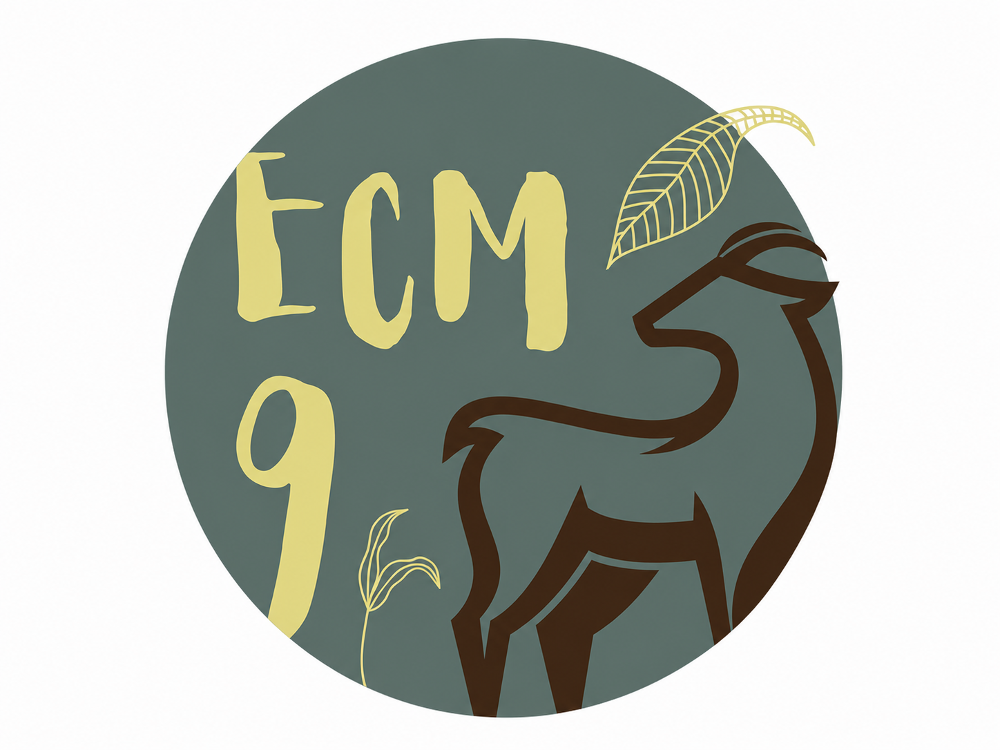
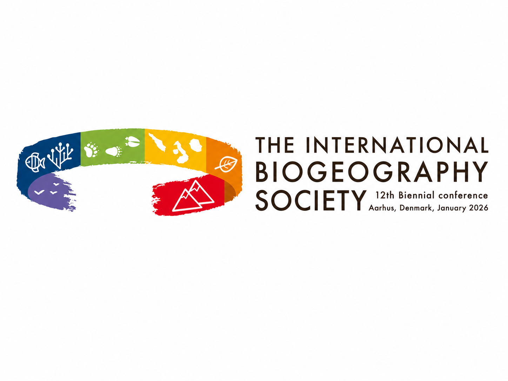
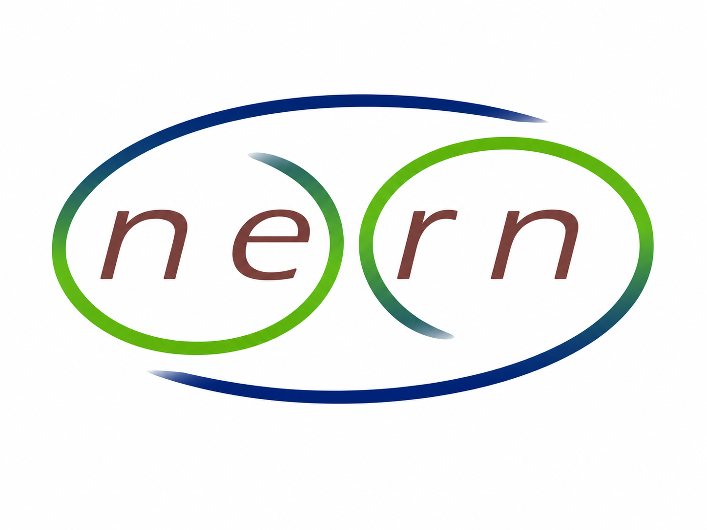
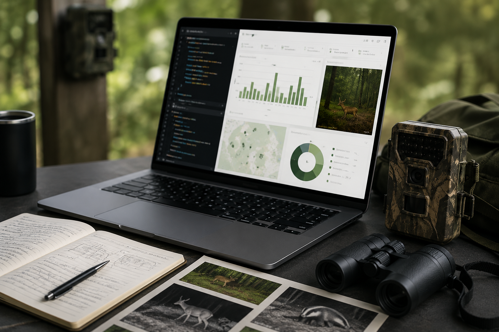

This page lists publications, workshops, and training activities related to camtrapReport. It is intended as a central place for users to find scientific outputs, tutorials, and workshop information.
Publications
The following publications describe camtrapReport or related workflows.

Conference abstract
Ebrahimi, E., Stubbe, A., Dijkhuis, L., de Knegt, H., Liefting, Y., & Jansen, P. A. (2025). Automating camera-trap data reporting for wildlife monitoring. IX European Congress of Mammalogy (ECM9), Patras, Greece, 31 March – 4 April 2025.

Conference abstract
Ebrahimi, E., & Jansen, P. A. (2026). CamtrapReport: An R package for automating camera-trap data reporting for wildlife monitoring. The International Biogeography Society – 12th Biennial Conference, Aarhus, Denmark, 5–10 January 2026.

Conference abstract
Ebrahimi, E., Stubbe, A., Dijkhuis, L. R., Liefting, Y., de Knegt, H. J., & Jansen, P. A. (2026). camtrapReport: An R package for automating camera-trap data reporting for wildlife monitoring. Netherlands Annual Ecology Meeting (NAEM 2026), Lunteren, the Netherlands, 10–11 February 2026.
Workshops and training
This section lists workshops, tutorials, and training activities related to camtrapReport.
Training workshop
camtrapReport: An R package for automating camera-trap data reporting in wildlife monitoring
Host: TrapLab community, Utrecht University, Utrecht, the Netherlands
Date: May 4, 2026

Technical workshop
camtrapReport: A modular R package for automating camera-trap data reporting in wildlife monitoring
Host: Research Institute for Nature and Forest (INBO), Brussels, Belgium
Date: May 29, 2026
Upcoming workshops
Community and contact
camtrapReport is designed for the camera-trap community. Organisations, research teams, and camera-trap networks interested in arranging workshops, exploring collaboration opportunities, or contributing new camtrapReport modules are welcome to get in touch by email at e.ebrahimi@uu.nl or via LinkedIn.